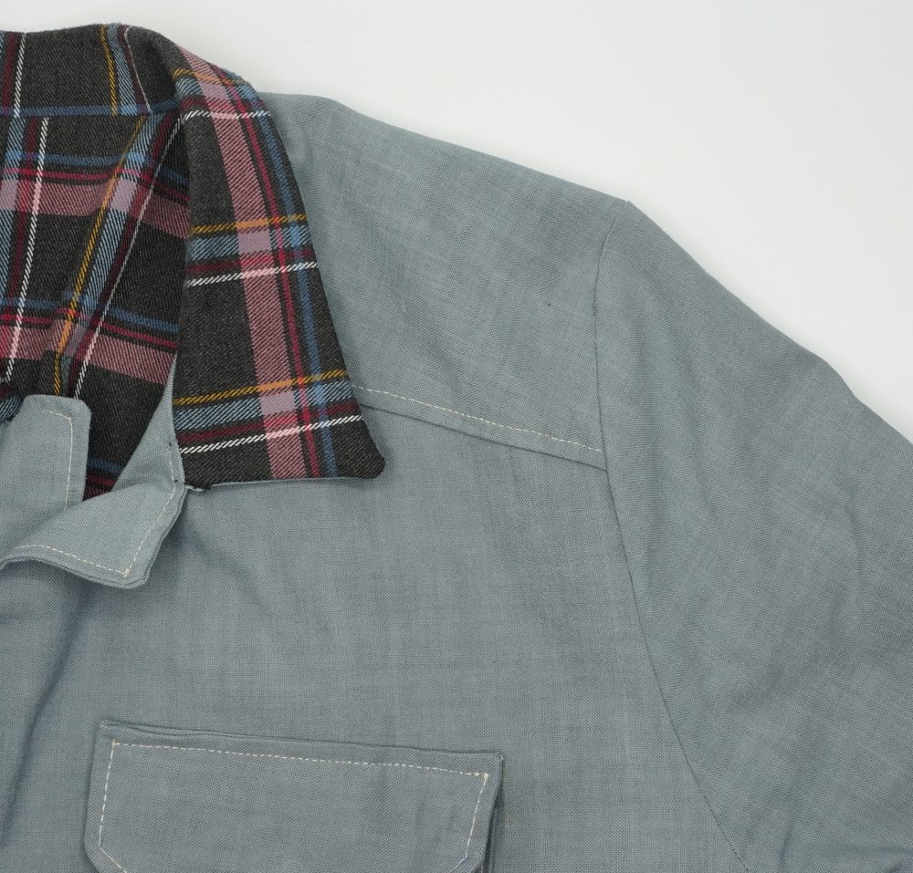

Options guide
The style of the safari jacket
The style of a safari jacket depends on the style of its pockets and on the small pieces added to it: cartridge holders, epaulettes, sleeve tabs… and on whether or not there is a shoulder piece (the option is available for this lined safari jacket).
The sleeves are tailored sleeves, for comfort at the elbow: they are therefore made of two parts.
For pockets (including the sleeve pocket) and sleeve tabs, positions are suggested on the pattern. Choose the model you like among the many options available, with an optional flap for the pockets, then download the patterns matching the dimensions you chose: see the Patch pockets and Sleeve tabs pages.
For a cartridge holder or epaulettes, see the Cartridge holders and Epaulettes pages.
Measurements
The ten body measurements are explained, with diagrams, in the Measurement guide tab.
Ease
- Shoulder ease (0 à 4 cm, default 2 cm) : Margin added to the shoulder width for freedom of movement.
- Neck ease (0 à 3 cm, default 1.5 cm) : Margin added to the neck circumference so that the collar is not tight.
- Waist ease (1 à 5 cm, default 4 cm) : Margin added to the waist circumference for comfort.
- Wrist ease (9 à 14 cm, default 11 cm) : Width of the sleeve at the wrist, before the cuff.
Design settings
- Total length (60 à 90 cm, default 74.5 cm) : Length of the garment, from shoulder to hem.
- Armhole height (24 à 28 cm, default 24 cm) : Armhole height, which sets the room under the arm.
- Cuff width (5 à 9 cm, default 7 cm) : Cuff width.
- Button diameter (1.5 à 2.2 cm, default 1.8 cm) : Button diameter: it sets the size of the buttonholes.
Pieces to download
The pieces can be downloaded in groups:
| Simple safari jacket | Lined safari jacket |
|---|---|
|
|
The With shoulder piece box (ticked by default) gives a pattern with an additional piece, a separate shoulder piece, sewn between the front and the back. Unticked, there is no shoulder piece: the front and the back are each a single piece that includes the shoulder, and the facing is adapted accordingly; the front interfacings follow.

Seam allowance
The seam allowance is added where it is needed and you choose its width; 0 gives the pieces without allowance. Marked corners are cut at an angle, as on the original model, to make assembly easier.
Printing
The A4 PDF is printed at 1:1 scale; check the 5 × 5 cm square. The one-page PDF is not printed: it is meant to be projected onto the fabric (for example with Pattern Projector). See Printing correctly.